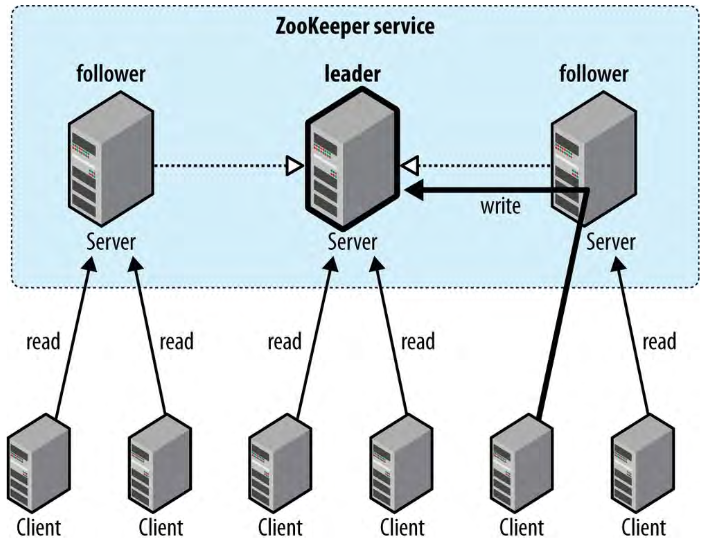
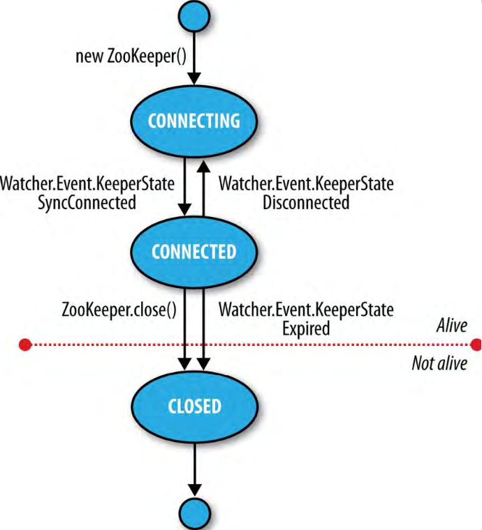

ZooKeeper服务
ZooKeeper是一个高可用，高性能的协调服务。
1、数据模型
ZooKeeper管理着一个节点的层级树，这些节点叫作znodes。一个znode保存有数据和一个相关的ACL。ZooKeeper是用来协调的（一般使用很少的数据），低数据存储的，任何znode上保存的数据量都限制为1MB。
数据访问时原子的。客户端读取znode保存的数据，不会只读一部分；数据会进行完整的传送，否则读取失败。类似地，写操作会替换zonde的所有数据。ZooKeeper确保写操作成功或者失败，不会只写一部分。ZooKeeper不支持追加操作。这些特性与HDFS相反，HDFS是用于大量数据的流式访问并支持追加操作。
znode通过路径被引用，在ZooKeeper中，路径由斜线分隔得Unicode字符串表示，与Unix文件系统路径类似。路径必须是绝对路径，必须以斜线开始。每个路径都是唯一的，并且不用解析（不支持“.”或者“..”的使用）。路径的每个组成部分都不能是“zookeeper”，ZooKeeper使用/zookeeper子树来存储管理信息，比如配额信息。znode路径不是URIs，在Java API中使用java.lang.String表示。
2、短暂的zondes
znode可以短暂的（ephemeral）或者持久的（persistent）。在创建znode时设置znode类型，并且之后都不应该改变znode类型。当创建znode的客户端会话结束，短暂的znode会被ZooKeeper删除。相反，持久的znode不与客户端会话绑定，只能被客户端（不一定是创建它的那个）明确的删除。短暂的znodes不应该有子znode，即使是短暂的子zondes。即使短暂的znodes是与会话客户端绑定的，它们对所有的客户端都是可见的（当然，服从于ACL策略）。
短暂的znodes对于构建需要知道特定分布式资源何时可用的应用是理想的。
3、序号
按次序的（sequential）znode会被ZooKeeper指定一个序号作为它的名字的一部分。如果使用按次序的标识set创建znode，那么单调递增技术器（由父znode维护的）的值会追加到znode的名字上。
如果客户端请求使用名字/a/b-创建顺序znode，创建的znode可能名字是/a/b-3。如果稍后使用名字/a/b-创建了另一个顺序znode，计数器会给它一个更大的值追加到名字上——比如/a/b-5。在Java API中，分配给znode的实际路径会作为调用create()方法的返回值返回。
序号可以用来实现分布式系统中事件的全局排序，也可以被客户端用来推测顺序。在锁服务（Lock service）中，可以用顺序znodes构建共享的锁（shared lock）。
4、Watches
Watches让客户端可以在znode发生某些改变时获得通知。通过ZooKeeper服务的操作来设置Watches，ZooKeeper服务的另外一些操作会触发Watches。比如，客户端调用znode的exists操作，同时在znode上放置一个watch。如果znode不存在，exists操作返回false，如果，后来第二个客户端创建了这个znode，则会触发这个watch，并通知第一个client创建了znode。
Watchers只会触发一次。为了获得多次通知，客户端需要注册watch。所以，如果之前所举例子的客户端要获得znode是否存在的更多通知（比如，znode被删除时的通知），那么就需要再次调用exists操作来设置一个watch。
5、操作
ZooKeeper服务的操作
| 操作 | 描述 |
|---|---|
| create | 创建一个znode（父znode必须已经存在） |
| delete | 删除一个znode（这个znode必须没有子znode） |
| exists | 测试znode是否存在并获取它的metadata |
| getACL，setACL | 获取/设置一个znode的ACL |
| getChildren | 获取一个znode的子znode集合 |
| getData，setData | 获取/设置znode的相关数据 |
| sync | 用ZooKeeper同步客户端的某个znode视图 |
ZooKeeper中的更新操作是有条件的，delete和setData操作需要指定被更新znode（通过提前调用exists找到）的版本号。如果版本号不匹配，更新操作失败。更新是一个非阻塞的操作，所以客户端失败的更新操作（因为同时另一个进程的更新）可以决定重试或者采取其它行动，并且可以在不阻塞其它进程进度的情况下重试或者采取其它行动。
尽管ZooKeeper可以被看作是一个文件系统，但是文件比较小并且是整存整取的，没有必要提供文件的打开、关闭、或者寻址操作。
ZooKeeper的sync操作和POSIX文件系统的fsync操作不同。ZooKeeper中的写是原子的，成功的写操作确保数据成功写到了大多数ZooKeeper服务器的持久化存储。但是，读取得状态比ZooKeeper服务的最新状态滞后是允许的，sync操作是用来让客户端保持最新状态的。
6、多重更新（multiupdate）
multi操作将多个基础操作绑定到一起，这些操作都成功或者都失败。多重更新对于构建维持全局不变性的架构非常有用。一个例子是无向图（undirected graph）。图的每个顶点由一个ZooKeeperznode表示，增加或者删除一条边要更新两个与它相关的顶点。使用multi操作将两个znodes的更新绑定，可以确保更新是原子的。
7、APIs
ZooKeeper有同步的Java API和异步的Java API。异步的Java API接收一个回调接口实现作为参数。异步的API适用于事件驱动的编程模型。异步API可以使请求管线化（pipeline），在某些场景可以实现更好的通量。
8、Watch触发器
读操作exists，getChildren，getData可以设置watches，这些watches由写操作create，delete，setData触发。ACL操作与watches无关。触发watch时，会产生watch事件，watch事件的类型依赖watch本身和触发它的操作：
exists操作设置的watch，会在被注视的zonde被创建（NodeCreated）、删除（NodeDeleted）或数据更新（NodeDataChanged）时被触发getData操作设置的watch，会在被注视的znode被删除（NodeDeleted）或数据更新（NodeDataChanged）时被触发。getChildren操作设置的watch，会在被注视的znode的子znode被创建（NodeChildrenChanged）或删除（NodeChildrenChanged）、或者它本身被删除（NodeDeleted）时触发。
watch事件包括事件涉及的znode的路径，所以对于NodeCreated和NodeDeleted事件，通过检查路径可以知道被删除或创建的是哪一个节点。要查看NodeChildrenChanged事件改变的是哪一个节点，需要再次调用getChildren以获取新的子节点集合。类似地，要查看NodeDataChanged事件的新数据，需要调用getData。这两种情况下，znode的状态（在获取watch事件和执行读取操作之间）可能已经被改变了，写应用的时候要牢记这点。
9、ACLs
使用一组ACLs创建的znode，决定了谁可以在znode上执行哪些操作。
ACLs依赖于认证（authentication），客户端使用这个进程向ZooKeeper表明身份。ZooKeeper提供了一些认证schema：
digest
客户端使用用户名和密码进行认证
sasl
客户端使用Kerberos进行认证
ip
客户端使用IP地址进行认证
客户端可以在建立ZooKeeper会话后进行认证。认证是可选的，如果znode的ACL需要一个认证过的客户端，客户端就必须进行认证以访问znode。使用digest Schema进行认证的例子：
zk.addAuthInfo("digest", "tom:secret".getBytes());
ACL包括认证schema和权限。比如，如果要给IP地址为10.0.0.1的客户端某个znode的读权限，需要设置认证schema为ip，ID为10.0.0.1，并且设置READ权限：
new ACL(Perms.READ, new Id("ip", "10.0.0.1"));
权限包括CREATE（create创建子节点操作），READ（getChildren和getData操作），WRITE（setData操作），DELETE（delete删除子节点操作），ADMIN（setACL操作）。
exists操作不受ACL权限控制，任何客户端都可以调用exists来查看某个znode的Stat或者判断某个znode是否存在。
在ZooDefs.Ids类中有一些预定义的ACLs，包括OPEN_ACL_UNSAFE——将所有的权限（不包括ADMIN权限）给每个用户。
ZooKeeper还可以集成第三方的认证系统。
10、实现
ZooKeeper可以以两种模式运行，单机模式（standalone mode）——只有一个ZooKeeper服务器，用于测试，不具备高可用性或弹性；备份模式（replicated mode）——运行在集群上，被称为ZooKeeper团体（ensemble）。ZooKeeper通过备份获得高可用，只要团体中的大多数机器启动就可以提供服务。比如，5节点的团体，任意两台机器故障服务仍然可以继续，因为多数的三台机器仍然运行。但是对于6节点，两个故障可以继续，3个故障则不能继续。因此，ZooKeeper团体通常有奇数个机器。
概念上讲，ZooKeeper非常简单：它要做的只是确保对节点树的更改备份到了团体的大多数节点。如果少数的机器故障，那么至少有一台保存最新状态的机器仍然正常，其余正常机器可以从这台机器获取最新状态备份。
实现上，确是不简单的。ZooKeeper使用了Zab协议，它有两个阶段，但是这两个阶段可以无限地重复：
头领选择
团体中的机器选择一个头领（leader），其余的机器则作为跟随者（followers）。当大多数的跟随者与头领状态同步之后，这个阶段完成。
原子性广播
所有的写请求都面向头领，头领将更新广播到跟随者。当大多数跟随者将改变持久化后，头领将更新提交（commit），客户端将得到更新成功的答复。
如果头领故障，剩余的机器会选取一个新的头领并继续提供服务。如果之前的头领恢复了，恢复后它将作为跟随者。头领选择很快，200ms左右，头领选择对性能影响很小。团体的所有机器在更新znode树内存中的拷贝之前会将更新写到磁盘。读取请求可能由任何的节点来回应，因为读取都是针对内存中数据的查询，非常快。
ZooKeeper的Zab协议与Paxos算法不同。Google的Chubby锁服务使用的是Paxos算法，与ZooKeeper作用类似。
11、一致性
理解ZooKeeper实现的可以帮助理解ZooKeeper的一致性保证。“头领”和“跟随者”的概念是非常合适的，因为跟随者相比头领可能在一些更新上有延迟。头领将改变提交之前，团体的大多数（并不是全部）需要将改变持久化。客户端连接的是跟随头领的ZooKeeper服务器。客户端可能实际上连接的是头领，但是客户端无法控制也无从知晓所连接的是否是头领。

每个对znode树的更新都会被指定一个全局唯一的识别器（identifier）——叫作zxid（ZooKeeper transaction ID）。更新是有顺序的，较小zxid的更新发生较早。
顺序一致性（Sequential consistency）
来自客户端的更新按照更新发送的顺序执行。这意味着，如果客户端把znode z的值改为a，稍后又把znode z的值改为b，那么在客户端看到znode z的值为b之后，没有客户端会看到znode z的值是a（如果期间没有对znode z做更新）。
原子性（Atomicity）
更新要么成功要么失败，这意味着如果更新失败，没有客户端会看到失败的更新。
单系统映象（Single system image）
不管客户端连接的是团体的哪一个服务器，客户端看到的都是相同的系统图景。这意味着，相同的会话中，如果客户端连接了新的服务器，它不会看到比它之前连接的服务器的状态更老的状态。当一个服务器故障，客户端连接团体中另一个服务器时，如果这个服务器状态比故障的服务器老，那么在这个服务器状态与故障服务器状态保存一致之前它不会接受客户端的连接。
耐久性（Durability）
如果更新成功，则会被持久化并且不能撤销。即使服务器故障，更新结果也能保留。
及时性（Timeliness）
客户端的系统视图延时是有边界的，延时一般不会超过几十秒。
为了性能，读操作由ZooKeeper某个服务器的内存来满足，并且不会参与到全局顺序的写操作中。这个属性导致客户端看到的状态可能不是ZooKeeper团体的最新状态，即ZooKeeper不保证“同时一致的跨客户端视图”（simultaneously consistent cross-clinet views）。要避免这种情况，可以在读取znode的值之前，调用sync操作，强制所连接的znode与头领节点保持同步。
有些迷惑的是，sync操作是异步的操作，不用等待它返回结果，因为ZooKeeper可以保证sync操作完成后所有的后续操作都会执行，即使是在sync操作完成前发起的操作。
12、会话
使用一组ZooKeeper团体的服务器来配置ZooKeeper客户端。启动时，客户端会尝试连接其中的一个服务器，如果连接失败则尝试其它的服务器。连接成功后，服务器会为客户端创建一个新的会话。会话有一个超时时间，由创建它的应用决定。如果在超时时间内服务器没有收到请求，会话过期。一旦会话超时，则不能重新打开，与会话相关的任何暂时节点都会丢失。会话过期是相对少见的事件，一般会话都是长时间活跃的，应用应该维持会话。
当会话空闲超过一定的时间，客户端可以发送ping请求（aka心跳）来维持会话活跃。ZooKeeper客户端库可以自动的发送ping，不需要额外的应用代码来维护会话。发送ping的时间一般比较小，以检测服务器故障并在会话超时时间内重新连接到其它的服务器。
ZooKeeper客户端会自动处理ZooKeeper服务器的故障重连，至关重要的是，服务器重连后会话（和相关的暂时性znodes）仍然是可用的。在故障转移的过程中，应用会收到服务断开连接和重新连接的通知。当客户端链接断开时，不会发送watch通知，但是，当客户端成功重连后会发送watch通知。如果，当客户端重连时应用尝试执行某一个操作，操作会失败。所以，实际的ZooKeeper应用中，处理连接丢失异常是非常重要的。
13、时间（Time）
tick time，ZooKeeper的基础时间段，团体中的服务器用它来定义服务器交互运行的时间表（schedule）。其它的设置是根据tick time定义的，或者至少受tick time的限制。比如，会话超时时间不能少于2个tick time并且不能大于20个tick time，如果尝试设置不在这个范围内的会话超时时间，依然会被修正到这个范围内。常用的tick time是2s，对应的会话超时时间范围是4~40s。
设置会话超时时间有一些考虑。小的会话超时时间可以更快的检测到机器故障。太小的会话超时时间，因为网络繁忙会导致包延时，并且可能会导致不必要的会话超时；机器可能会出现抖动（“flap”）：重复地在短时间内离开并重新加入团体。
创建复杂暂时状态的应用应该倾向于较长的会话超时时间，因为重新构建的开销会比较大。某些情况下（维护和升级的场合），将应用设计为可以在会话超时时间段内重启来避免会话过期也是有可能的。服务器会给每个会话一个唯一的身份（identity）和密码，当进行连接时把它们传递给ZooKeeper，会话是有可能恢复的（只要会话没有超时）。因此，可以优雅的关闭应用，把会话身份和密码保存到稳定的存储，重启应用时则从存储中读取会话身份和密码并恢复会话。可以把这个特性作为避免会话超时的优化。它并没有移除处理会话超时的必要，如果机器意外的故障仍然会超时，或者尽管应用优雅的关闭了，但是会话过期之前没有重启等原因，都还会导致会话超时。
一个一般规则是，ZooKeeper团体越大，会话超时时间应该越大。连接超时时间、读取超时时间，和ping时间都要根据团体中服务的数量来定义，团体越大，这些时间应该越小。如果频繁的丢失连接，可以把这些超时时间加大。
14、状态
ZooKeeper对象在它的生命周期中有不同的状态，可以用getState()方法查询在任意时间查询它的状态：
public States getState()
ZooKeeper 状态转换

States是一个表示ZooKeeper对象不同状态的枚举类。ZooKeeper同一时间只会有一种状态。新创建的ZooKeeper实例在它尝试和ZooKeeper服务建立连接时是CONNECTING状态；连接建立后是CONNECTED状态。使用ZooKeeper对象通过注册Watcher对象可以获得状态转移的通知。当转换为CONNECTED状态时，watcher会收到一个KeeperState是SyncConnected的WatchedEvent。
ZooKeeper Watcher对象有两个职责：用来获取ZooKeeper状态改变的通知；用来获取znodes改变的通知。传递给ZooKeeper对象构造器的watcher默认是用来获取状态变化通知的；但是znode改变可以使用专用的Watcher实例（通过传递watcher给合适的读取操作）或者共享默认的watcher（用读取操作的格式——用一个Boolean标识来指定是否使用watcher）。
ZooKeeper实例可能从ZooKeeper服务断开连接并重连，状态会在CONNECTED和CONNECTING直接转换。如果断开连接，watcher会收到一个Disconnected事件。注意，这些状态转换是由ZooKeeper实例本身发起的，当连接断开时会自动地尝试重连。
如果调用了ZooKeeper实例的close()方法或者会话超时，ZooKeeper的状态会变为CLOSED；超时的时候对应的KeeperState是Expired。状态为CLOSED时，ZooKeeper对象将不再被当作是活跃的（可以用States的isAlive()方法来测试）并且不能被重新使用，要再连接到ZooKeeper服务，客户端必须创建新的ZooKeeper实例。